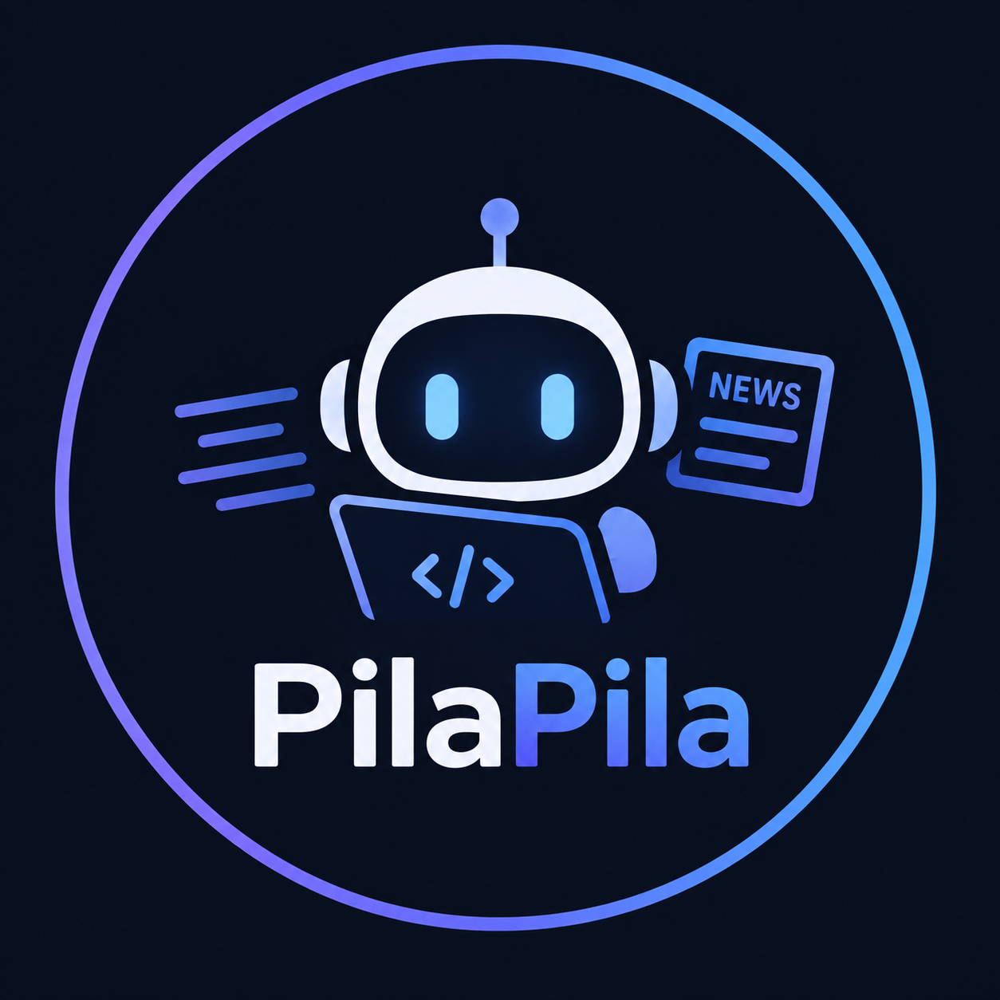

Edición de hoy
Noticias de IA y programación, temario por lenguaje y un quiz de código nuevo cada día.
PilaPila News necesita que inicies sesión con tu cuenta de Discord para mostrarte el contenido y guardar tu progreso.
5 preguntas de código de hoy, en distintos lenguajes.
Se actualiza cada día con noticias nuevas, 5 preguntas y 5 tips distintos.